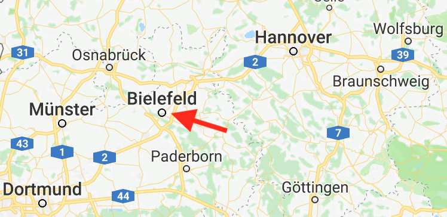

$ whoami
| Daniel Rosowski |
| Softwareentwickler |
 |
Wozu Visualisieren?
Gemeinsames Verständnis schaffen
Nachvollziehbarkeit
Debugging
Wie Visualisieren?
Datenstrukturen und andere strukturierte Informationen können als Graphen dargestellt werden.
Manuell?
Graph selber malen, z.B. mit Dia, xfig, Inkscape, Skencil, ...
- + WYSIWYG
- + einfach zu bedienen
- - Layout ist Handarbeit
- - große Graphen kaum beherrschbar
- - nicht skriptbar
Automatisch!
Graph wird beschrieben, anstatt gemalt!
Warum DOT?
Low-tech
textuelle Beschreibung eines GraphenUniversell einsetzbar
z.B. in Logdateien, Datenbank, WebPraxiserprobt und hype-free
Entwickelt 1999 von AT&T LabsVielfältige Anwendungsszenarien
Graphen, Bäume, Netzwerke oder andere strukturierte DatenGraphen ABC
Als Graphen bezeichnet man eine Menge von Knoten und Kanten.
Es wird unterschieden zwischen ungerichteten Graphen
==
und gerichteten Graphen
≠
Bäume sind Graphen mit einem Ursprungsknoten und genau einer Kante zu jedem Knoten
Binärbäume sind Bäume mit maximal zwei Kindsknoten
Ein Netzwerk ist ein gerichteter Graph mit gewichteten Kanten
Das Graphviz Ökosystem
Graphviz ist eine Software-Suite zum Visualisieren von Graphen
DOT ist eine Sprache um Graphen zu beschreiben
Graphviz bietet verschiedene Engines für die verschiedenen Grapharten
dot — gerichtete, azyklische Graphen
dot draws directed graphs. It works well on DAGs and other graphs that can be drawn as hierarchies.
neato — ungerichtete Graphen
neato draws undirected graphs using 'spring' models
We regard the desirable “geometric” (Euclidean) distance between two vertices in the drawing as the “graph theoretic” distance between them in the corresponding graph. We introduce a virtual dynamic system in which every two vertices are connected by a “spring” of such desirable length. Then, we regard the optimal layout of vertices as the state in which the total spring energy of the system is minimal.
twopi — zeichnet Graphen spiralförmig
twopi draws graphs using a radial layout (...). Basically, one node is chosen as the center and put at the origin. The remaining nodes are placed on a sequence of concentric circles centered about the origin, each a fixed radial distance from the previous circle.
circo — zeichnet Graphen kreisförmig
circo draws graphs using a circular layout (...). The tool identifies biconnected components and draws the nodes of the component on a circle. The block-cutpoint tree is then laid out using a recursive radial algorithm. Edge crossings within a circle are minimized by placing as many edges on the circle's perimeter as possible.
fdp — ungerichtete Graphen
fdp draws undirected graphs using a 'spring' model. It relies on a force-directed approach in the spirit of Fruchterman and Reingold.
sfdp — ungerichtete (große) Graphen
patchwork — Squarified Treemap (rechteckiges Layout)
patchwork draws the graph as a squarified treemap (...). The clusters of the graph are used to specify the tree.
osage — zeichnet Graphen in einer Clusterstruktur
osage draws clustered graphs. As input, it takes any graph in the dot format. It draws the graph recursively. At each level, there will be a collection of nodes and a collection of cluster subgraphs. The internals of each cluster subgraph are laid out, then the cluster subgraphs and nodes at the current level are positioned relative to each other, treating each cluster subgraph as a node.
Anwendungsbeispiele
Entscheidungsbaum
Hashbaum (Merkle Tree)
Endlicher Automat (FSM)
Organigramm
Beispiel: Neuronale Netze
Istio Servicegraph
Weitere Beispiele aus der Praxis
- Maven Dependencies Plugin
mvn dependency:tree -Dincludes=com.example -DappendOutput=true
-DoutputType=dot -DoutputFile=/path/to/output.gvjdeps -dotoutput target <classes>